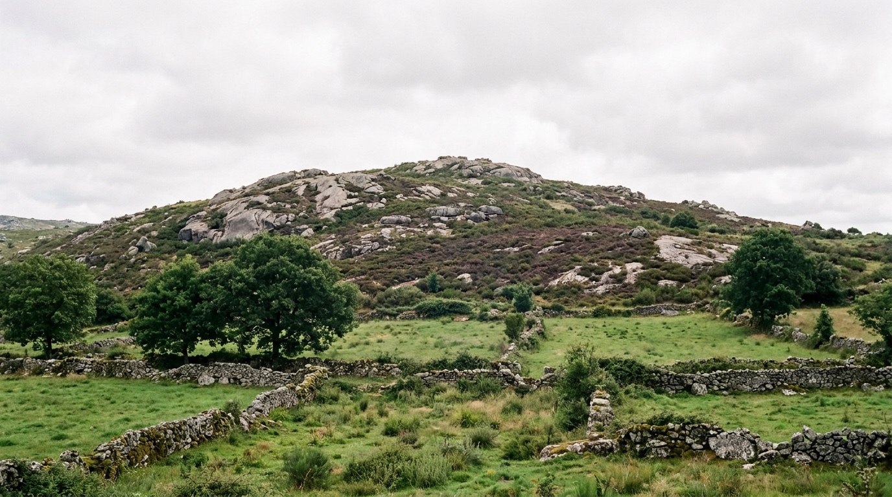
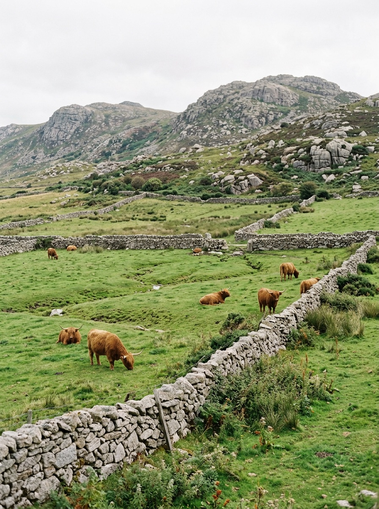
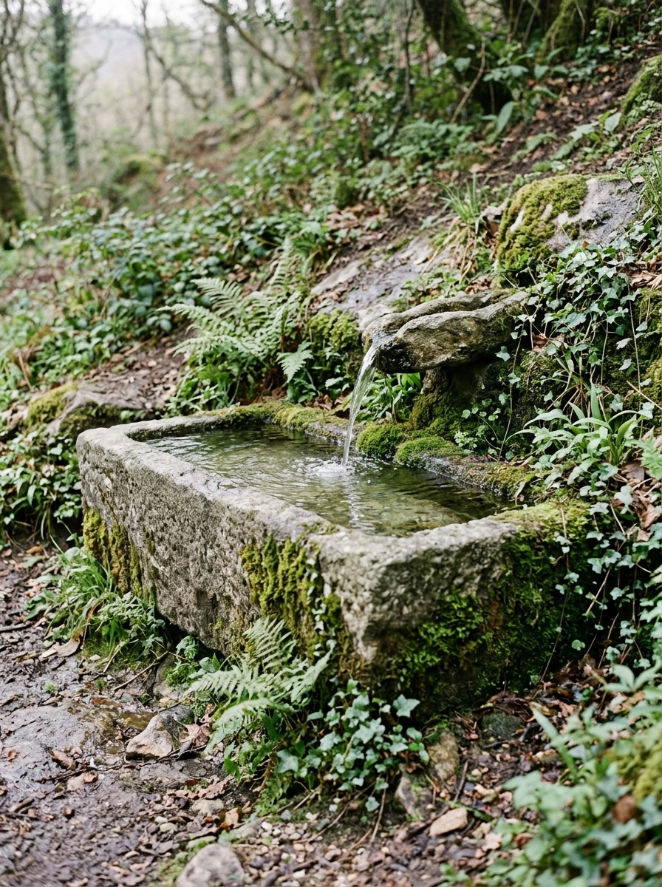
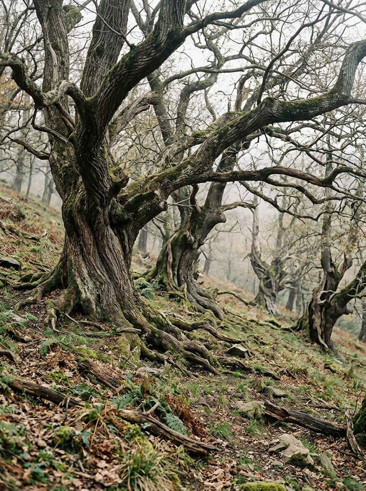
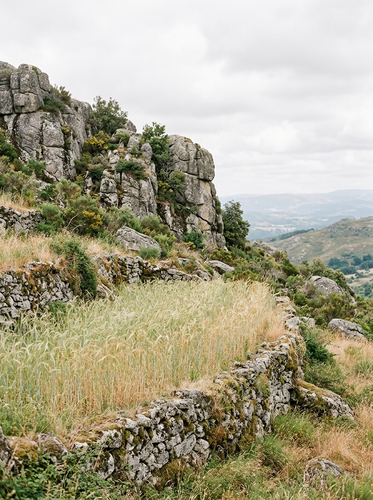
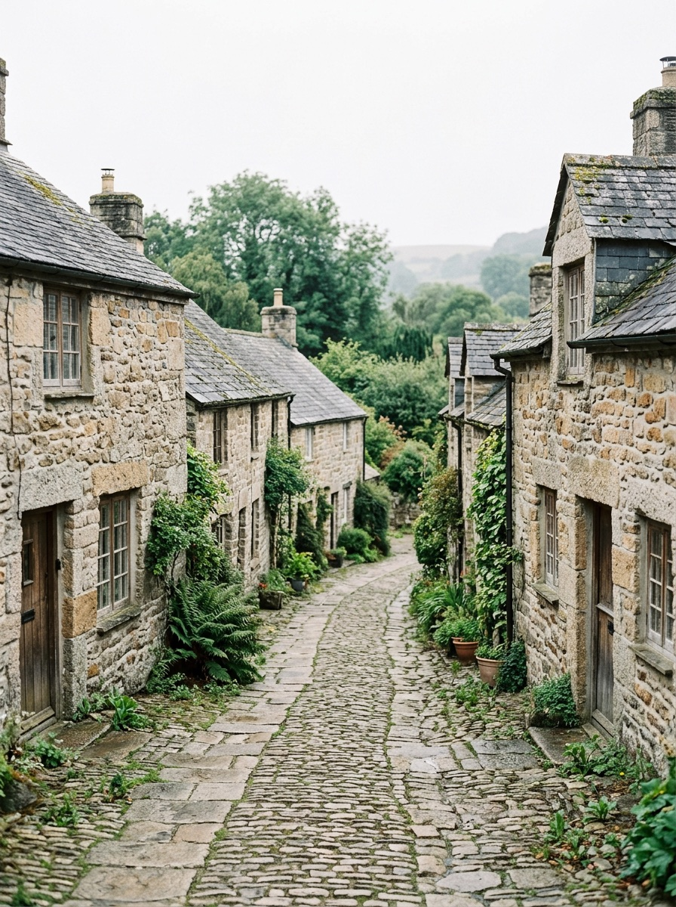
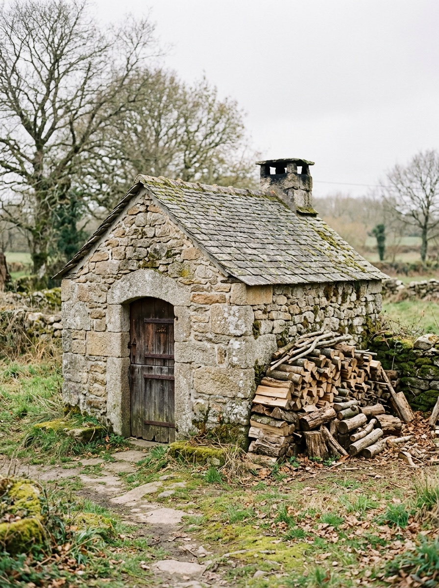

Seam Transitions

Baldio
Common land
Four centuries
(01) The hill
For four hundred years this hill has been grazed, farmed and shared by the villages around it. A company wants to dig it out for lithium. We want it to stay a hill.
-

Lameiro do Fundo Meadow
-

Fonte da Laje Spring
-

Souto Velho Chestnuts
-

Leira Alta Rye
-

Aldeia Village
-

Forno do Povo Oven